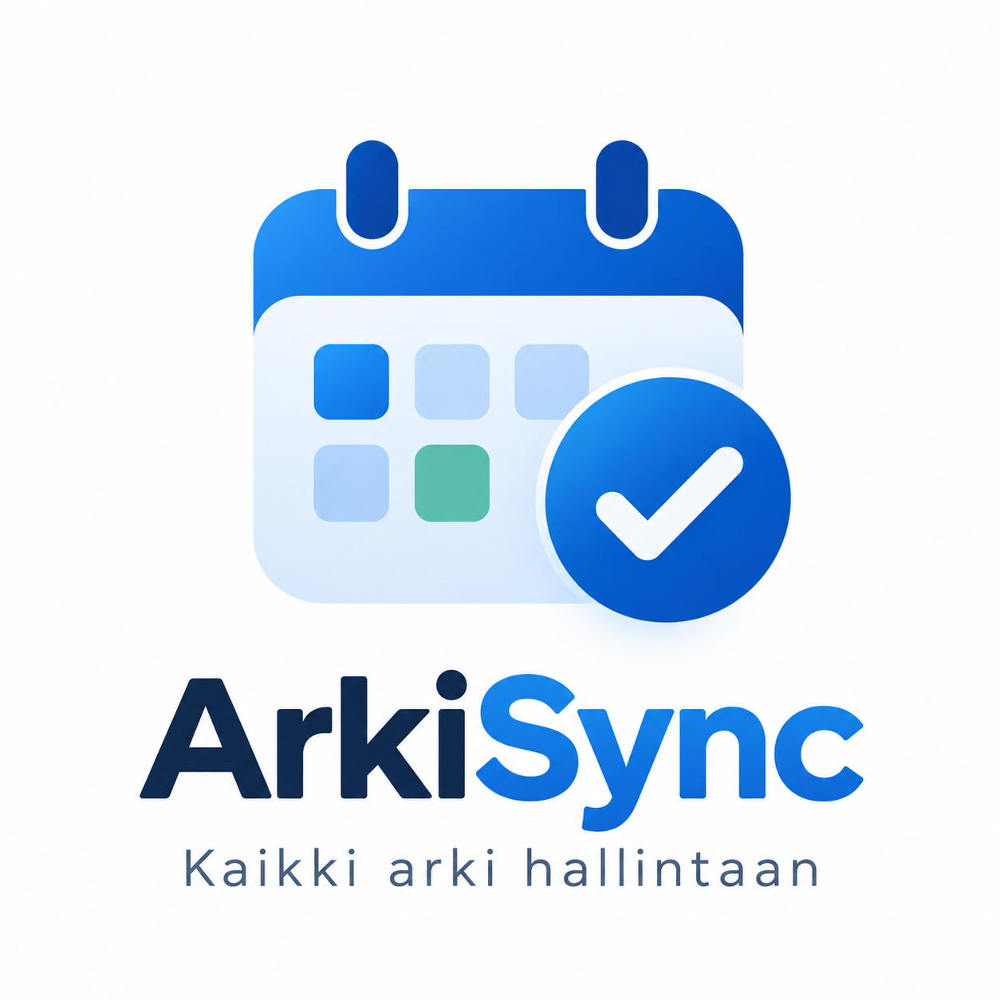
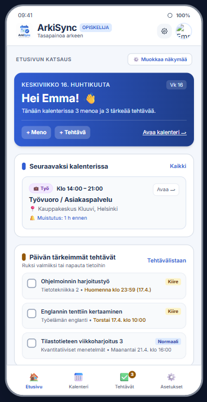

Arkisync tuo opiskelijan koko arjen yhteen paikkaan
Opiskelu, työvuorot, tehtävät ja vapaa-aika löytyvät usein eri sovelluksista ja kalentereista. Arkisync on uusi palveluidea, jonka tavoitteena on helpottaa kiireisen opiskelijan arjen suunnittelua kokoamalla tärkeät menot ja tehtävät yhteen paikkaan.
Arki hallintaan yhdellä palvelulla
ArkiSync Arkisync pyrkii ratkaisemaan tämän ongelman kokoamalla arjen tärkeät tiedot samaan palveluun. Näin käyttäjä näkee yhdellä silmäyksellä, mitä päivän tai viikon aikana on tulossa.

Arkisyncin tärkeimpiä ominaisuuksia
- Koulu tehtävien ja määräaikojen seuraaminen
- Työvuorojen ja muiden menojen lisääminen kalenteriin
- Tehtävälista ja tehtävioen kiireellisyysluokka
- Muokattavat muistutukset
- Pikavalinnat usein toistuville tapahtumille
- Mahdollisuus yhdistää muita kalentereita ja palveluita
Suunniteltu opiskelijoiden todellisiin tarpeisiin
Arkisyncin suunnittelussa on hyödynnetty käyttäjäpalautetta. Testauksessa nousi esille esimerkiksi tarve nopeammalle tapahtumien lisäämiselle, muokattaville muistutuksille ja erilaisille tapahtumatyypeille.
"Arkisyncin tavoitteena on tehdä kiireisen opiskelijan arjesta selkeämpää ja vähentää jatkuvaa eri sovellusten välillä vaihtamista."

Tulevaisuudessa entistä enemmän integraatioita
Arkisynciä voidaan tulevaisuudessa kehittää yhdistämällä siihen esimerkiksi ulkoisia kalenteripalveluita. Tavoitteena on, että käyttäjän tarvitsemat tiedot päivittyisivät mahdollisimman pitkälle automaattisesti.